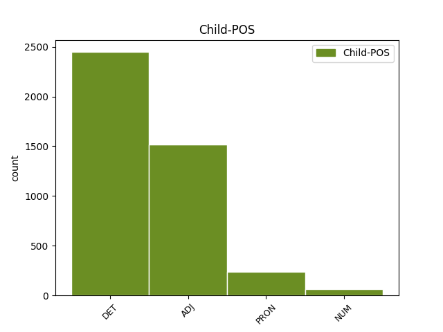

Distribution of features within this leaf

Agreement Rules sorted by frequency.
When the dependent token is None
1 Både _ _ _ _ 0 _ _ _
2 för _ _ _ _ 0 _ _ _
3 barnen _ _ _ _ 0 _ _ _
4 och _ _ _ _ 0 _ _ _
5 för _ _ _ _ 0 _ _ _
6 deras _ _ _ _ 0 _ _ _
7 föräldrar _ _ _ _ 0 _ _ _
8 är _ _ _ _ 0 _ _ _
9 det _ _ _ _ 0 _ _ _
10 viktigt _ _ _ _ 0 _ _ _
11 att _ _ _ _ 0 _ _ _
12 föräldrarna _ _ _ _ 0 _ _ _
13 får _ _ _ _ 0 _ _ _
14 möjlighet _ _ _ _ 0 _ _ _
15 att _ _ _ _ 0 _ _ _
16 välja _ _ _ _ 0 _ _ _
17 den en DET DT|UTR|SIN|DEF Definite=Def|Gender=Com|Number=Sing|PronType=Art 18 det _ _
18 livsform livsform NOUN NN|UTR|SIN|IND|NOM Case=Nom|Definite=Ind|Gender=Com|Number=Sing 0 _ _ _
19 som _ _ _ _ 0 _ _ _
20 de _ _ _ _ 0 _ _ _
21 trivs _ _ _ _ 0 _ _ _
22 bäst _ _ _ _ 0 _ _ _
23 med _ _ _ _ 0 _ _ _
24 . _ _ _ _ 0 _ _ _
When the dependent token is None
1 Det _ _ _ _ 0 _ _ _
2 vore _ _ _ _ 0 _ _ _
3 säkert _ _ _ _ 0 _ _ _
4 mentalhygieniskt mentalhygienisk ADJ JJ|POS|NEU|SIN|IND|NOM Case=Nom|Definite=Ind|Degree=Pos|Gender=Neut|Number=Sing 5 mod _ _
5 värdefullt värdefull ADJ JJ|POS|NEU|SIN|IND|NOM Case=Nom|Definite=Ind|Degree=Pos|Gender=Neut|Number=Sing 0 _ _ _
6 om _ _ _ _ 0 _ _ _
7 varje _ _ _ _ 0 _ _ _
8 förälder _ _ _ _ 0 _ _ _
9 som _ _ _ _ 0 _ _ _
10 ägnar _ _ _ _ 0 _ _ _
11 sig _ _ _ _ 0 _ _ _
12 åt _ _ _ _ 0 _ _ _
13 barnavård _ _ _ _ 0 _ _ _
14 på _ _ _ _ 0 _ _ _
15 heltid _ _ _ _ 0 _ _ _
16 kunde _ _ _ _ 0 _ _ _
17 få _ _ _ _ 0 _ _ _
18 hjälp _ _ _ _ 0 _ _ _
19 med _ _ _ _ 0 _ _ _
20 barnpassning _ _ _ _ 0 _ _ _
21 åtminstone _ _ _ _ 0 _ _ _
22 några _ _ _ _ 0 _ _ _
23 timmar _ _ _ _ 0 _ _ _
24 i _ _ _ _ 0 _ _ _
25 veckan _ _ _ _ 0 _ _ _
26 . _ _ _ _ 0 _ _ _
When the dependent token is None
1 I _ _ _ _ 0 _ _ _
2 vilken _ _ _ _ 0 _ _ _
3 ålder _ _ _ _ 0 _ _ _
4 lär _ _ _ _ 0 _ _ _
5 man _ _ _ _ 0 _ _ _
6 sig _ _ _ _ 0 _ _ _
7 lättast _ _ _ _ 0 _ _ _
8 att _ _ _ _ 0 _ _ _
9 arbeta _ _ _ _ 0 _ _ _
10 i _ _ _ _ 0 _ _ _
11 grupp _ _ _ _ 0 _ _ _
12 , _ _ _ _ 0 _ _ _
13 att _ _ _ _ 0 _ _ _
14 vänta _ _ _ _ 0 _ _ _
15 på _ _ _ _ 0 _ _ _
16 sin sig PRON PS|UTR|SIN|DEF Definite=Def|Gender=Com|Number=Sing|Poss=Yes|PronType=Prs 17 mod@poss _ _
17 tur tur NOUN NN|UTR|SIN|IND|NOM Case=Nom|Definite=Ind|Gender=Com|Number=Sing 0 _ _ _
18 , _ _ _ _ 0 _ _ _
19 att _ _ _ _ 0 _ _ _
20 samsas _ _ _ _ 0 _ _ _
21 om _ _ _ _ 0 _ _ _
22 leksaker _ _ _ _ 0 _ _ _
23 osv _ _ _ _ 0 _ _ _
24 ? _ _ _ _ 0 _ _ _
When the dependent token is None
1 Men _ _ _ _ 0 _ _ _
2 det _ _ _ _ 0 _ _ _
3 är _ _ _ _ 0 _ _ _
4 ingenting _ _ _ _ 0 _ _ _
5 som _ _ _ _ 0 _ _ _
6 säger _ _ _ _ 0 _ _ _
7 - _ _ _ _ 0 _ _ _
8 och _ _ _ _ 0 _ _ _
9 knappast _ _ _ _ 0 _ _ _
10 någon _ _ _ _ 0 _ _ _
11 seriös _ _ _ _ 0 _ _ _
12 modern _ _ _ _ 0 _ _ _
13 forskare _ _ _ _ 0 _ _ _
14 som _ _ _ _ 0 _ _ _
15 sagt _ _ _ _ 0 _ _ _
16 - _ _ _ _ 0 _ _ _
17 att _ _ _ _ 0 _ _ _
18 1. _ _ _ _ 0 _ _ _
19 det _ _ _ _ 0 _ _ _
20 måste _ _ _ _ 0 _ _ _
21 vara _ _ _ _ 0 _ _ _
22 modern _ _ _ _ 0 _ _ _
23 , _ _ _ _ 0 _ _ _
24 som _ _ _ _ 0 _ _ _
25 står _ _ _ _ 0 _ _ _
26 för _ _ _ _ 0 _ _ _
27 kontakten _ _ _ _ 0 _ _ _
28 , _ _ _ _ 0 _ _ _
29 2. _ _ _ _ 0 _ _ _
30 det _ _ _ _ 0 _ _ _
31 måste _ _ _ _ 0 _ _ _
32 vara _ _ _ _ 0 _ _ _
33 bara _ _ _ _ 0 _ _ _
34 en en NUM RG|UTR|SIN|IND|NOM Case=Nom|Definite=Ind|Gender=Com|Number=Sing|NumType=Card 35 mod _ _
35 person person NOUN NN|UTR|SIN|IND|NOM Case=Nom|Definite=Ind|Gender=Com|Number=Sing 0 _ _ _
36 , _ _ _ _ 0 _ _ _
37 som _ _ _ _ 0 _ _ _
38 vårdar _ _ _ _ 0 _ _ _
39 barnet _ _ _ _ 0 _ _ _
40 , _ _ _ _ 0 _ _ _
41 3. _ _ _ _ 0 _ _ _
42 att _ _ _ _ 0 _ _ _
43 den _ _ _ _ 0 _ _ _
44 eller _ _ _ _ 0 _ _ _
45 de _ _ _ _ 0 _ _ _
46 som _ _ _ _ 0 _ _ _
47 vårdar _ _ _ _ 0 _ _ _
48 barnet _ _ _ _ 0 _ _ _
49 behöver _ _ _ _ 0 _ _ _
50 fungera _ _ _ _ 0 _ _ _
51 oavbrutet _ _ _ _ 0 _ _ _
52 under _ _ _ _ 0 _ _ _
53 dygnets _ _ _ _ 0 _ _ _
54 24 _ _ _ _ 0 _ _ _
55 timmar _ _ _ _ 0 _ _ _
56 . _ _ _ _ 0 _ _ _
Disagree Examples:
1 Dessa _ _ _ _ 0 _ _ _
2 inkomster _ _ _ _ 0 _ _ _
3 är _ _ _ _ 0 _ _ _
4 * _ _ _ _ 0 _ _ _
5 inkomst _ _ _ _ 0 _ _ _
6 av _ _ _ _ 0 _ _ _
7 tjänst _ _ _ _ 0 _ _ _
8 - _ _ _ _ 0 _ _ _
9 lön _ _ _ _ 0 _ _ _
10 , _ _ _ _ 0 _ _ _
11 pension _ _ _ _ 0 _ _ _
12 , _ _ _ _ 0 _ _ _
13 livränta _ _ _ _ 0 _ _ _
14 , _ _ _ _ 0 _ _ _
15 undantagsförmåner _ _ _ _ 0 _ _ _
16 och _ _ _ _ 0 _ _ _
17 övrig _ _ _ _ 0 _ _ _
18 tjänsteinkomst _ _ _ _ 0 _ _ _
19 . _ _ _ _ 0 _ _ _
20 ( _ _ _ _ 0 _ _ _
21 Undantag _ _ _ _ 0 _ _ _
22 : _ _ _ _ 0 _ _ _
23 periodiskt _ _ _ _ 0 _ _ _
24 understöd _ _ _ _ 0 _ _ _
25 eller _ _ _ _ 0 _ _ _
26 därmed _ _ _ _ 0 _ _ _
27 jämförlig _ _ _ _ 0 _ _ _
28 periodisk _ _ _ _ 0 _ _ _
29 inkomst _ _ _ _ 0 _ _ _
30 . _ _ _ _ 0 _ _ _
31 ) _ _ _ _ 0 _ _ _
32 * _ _ _ _ 0 _ _ _
33 inkomst _ _ _ _ 0 _ _ _
34 av _ _ _ _ 0 _ _ _
35 jordbruksfastighet _ _ _ _ 0 _ _ _
36 - _ _ _ _ 0 _ _ _
37 om _ _ _ _ 0 _ _ _
38 den en DET DT|UTR|SIN|DEF Definite=Def|Gender=Com|Number=Sing|PronType=Art 39 det _ _
39 skattskyldige skattskyldig ADJ JJ|POS|MAS|SIN|DEF|NOM Case=Nom|Definite=Def|Degree=Pos|Gender=Masc|Number=Sing 0 _ _ _
40 arbetat _ _ _ _ 0 _ _ _
41 i _ _ _ _ 0 _ _ _
42 jordbruket _ _ _ _ 0 _ _ _
43 i _ _ _ _ 0 _ _ _
44 ej _ _ _ _ 0 _ _ _
45 blott _ _ _ _ 0 _ _ _
46 ringa _ _ _ _ 0 _ _ _
47 omfattning _ _ _ _ 0 _ _ _
48 . _ _ _ _ 0 _ _ _
49 * _ _ _ _ 0 _ _ _
50 inkomst _ _ _ _ 0 _ _ _
51 av _ _ _ _ 0 _ _ _
52 rörelse _ _ _ _ 0 _ _ _
53 - _ _ _ _ 0 _ _ _
54 om _ _ _ _ 0 _ _ _
55 den _ _ _ _ 0 _ _ _
56 skattskyldige _ _ _ _ 0 _ _ _
57 arbetat _ _ _ _ 0 _ _ _
58 i _ _ _ _ 0 _ _ _
59 rörelsen _ _ _ _ 0 _ _ _
60 i _ _ _ _ 0 _ _ _
61 ej _ _ _ _ 0 _ _ _
62 blott _ _ _ _ 0 _ _ _
63 ringa _ _ _ _ 0 _ _ _
64 omfattning _ _ _ _ 0 _ _ _
65 . _ _ _ _ 0 _ _ _
1 Dessa _ _ _ _ 0 _ _ _
2 inkomster _ _ _ _ 0 _ _ _
3 är _ _ _ _ 0 _ _ _
4 * _ _ _ _ 0 _ _ _
5 inkomst _ _ _ _ 0 _ _ _
6 av _ _ _ _ 0 _ _ _
7 tjänst _ _ _ _ 0 _ _ _
8 - _ _ _ _ 0 _ _ _
9 lön _ _ _ _ 0 _ _ _
10 , _ _ _ _ 0 _ _ _
11 pension _ _ _ _ 0 _ _ _
12 , _ _ _ _ 0 _ _ _
13 livränta _ _ _ _ 0 _ _ _
14 , _ _ _ _ 0 _ _ _
15 undantagsförmåner _ _ _ _ 0 _ _ _
16 och _ _ _ _ 0 _ _ _
17 övrig _ _ _ _ 0 _ _ _
18 tjänsteinkomst _ _ _ _ 0 _ _ _
19 . _ _ _ _ 0 _ _ _
20 ( _ _ _ _ 0 _ _ _
21 Undantag _ _ _ _ 0 _ _ _
22 : _ _ _ _ 0 _ _ _
23 periodiskt _ _ _ _ 0 _ _ _
24 understöd _ _ _ _ 0 _ _ _
25 eller _ _ _ _ 0 _ _ _
26 därmed _ _ _ _ 0 _ _ _
27 jämförlig _ _ _ _ 0 _ _ _
28 periodisk _ _ _ _ 0 _ _ _
29 inkomst _ _ _ _ 0 _ _ _
30 . _ _ _ _ 0 _ _ _
31 ) _ _ _ _ 0 _ _ _
32 * _ _ _ _ 0 _ _ _
33 inkomst _ _ _ _ 0 _ _ _
34 av _ _ _ _ 0 _ _ _
35 jordbruksfastighet _ _ _ _ 0 _ _ _
36 - _ _ _ _ 0 _ _ _
37 om _ _ _ _ 0 _ _ _
38 den _ _ _ _ 0 _ _ _
39 skattskyldige _ _ _ _ 0 _ _ _
40 arbetat _ _ _ _ 0 _ _ _
41 i _ _ _ _ 0 _ _ _
42 jordbruket _ _ _ _ 0 _ _ _
43 i _ _ _ _ 0 _ _ _
44 ej _ _ _ _ 0 _ _ _
45 blott _ _ _ _ 0 _ _ _
46 ringa _ _ _ _ 0 _ _ _
47 omfattning _ _ _ _ 0 _ _ _
48 . _ _ _ _ 0 _ _ _
49 * _ _ _ _ 0 _ _ _
50 inkomst _ _ _ _ 0 _ _ _
51 av _ _ _ _ 0 _ _ _
52 rörelse _ _ _ _ 0 _ _ _
53 - _ _ _ _ 0 _ _ _
54 om _ _ _ _ 0 _ _ _
55 den en DET DT|UTR|SIN|DEF Definite=Def|Gender=Com|Number=Sing|PronType=Art 56 det _ _
56 skattskyldige skattskyldig ADJ JJ|POS|MAS|SIN|DEF|NOM Case=Nom|Definite=Def|Degree=Pos|Gender=Masc|Number=Sing 0 _ _ _
57 arbetat _ _ _ _ 0 _ _ _
58 i _ _ _ _ 0 _ _ _
59 rörelsen _ _ _ _ 0 _ _ _
60 i _ _ _ _ 0 _ _ _
61 ej _ _ _ _ 0 _ _ _
62 blott _ _ _ _ 0 _ _ _
63 ringa _ _ _ _ 0 _ _ _
64 omfattning _ _ _ _ 0 _ _ _
65 . _ _ _ _ 0 _ _ _
1 I _ _ _ _ 0 _ _ _
2 en _ _ _ _ 0 _ _ _
3 del _ _ _ _ 0 _ _ _
4 ämnen _ _ _ _ 0 _ _ _
5 har _ _ _ _ 0 _ _ _
6 läraren _ _ _ _ 0 _ _ _
7 fler _ _ _ _ 0 _ _ _
8 timmar _ _ _ _ 0 _ _ _
9 än _ _ _ _ 0 _ _ _
10 den _ _ _ _ 0 _ _ _
11 enskilde enskild ADJ JJ|POS|MAS|SIN|DEF|NOM Case=Nom|Definite=Def|Degree=Pos|Gender=Masc|Number=Sing 12 mod _ _
12 eleven elev NOUN NN|UTR|SIN|DEF|NOM Case=Nom|Definite=Def|Gender=Com|Number=Sing 0 _ _ _
13 . _ _ _ _ 0 _ _ _
1 Detta _ _ _ _ 0 _ _ _
2 innebär _ _ _ _ 0 _ _ _
3 bl.a. _ _ _ _ 0 _ _ _
4 * _ _ _ _ 0 _ _ _
5 att _ _ _ _ 0 _ _ _
6 ordna _ _ _ _ 0 _ _ _
7 daghem _ _ _ _ 0 _ _ _
8 , _ _ _ _ 0 _ _ _
9 lekskolor _ _ _ _ 0 _ _ _
10 , _ _ _ _ 0 _ _ _
11 barnkolonier _ _ _ _ 0 _ _ _
12 och _ _ _ _ 0 _ _ _
13 fritidsverksamhet _ _ _ _ 0 _ _ _
14 för _ _ _ _ 0 _ _ _
15 barn _ _ _ _ 0 _ _ _
16 och _ _ _ _ 0 _ _ _
17 ungdom _ _ _ _ 0 _ _ _
18 , _ _ _ _ 0 _ _ _
19 * _ _ _ _ 0 _ _ _
20 att _ _ _ _ 0 _ _ _
21 lämna _ _ _ _ 0 _ _ _
22 råd _ _ _ _ 0 _ _ _
23 och _ _ _ _ 0 _ _ _
24 upplysningar _ _ _ _ 0 _ _ _
25 om _ _ _ _ 0 _ _ _
26 uppfostran _ _ _ _ 0 _ _ _
27 till _ _ _ _ 0 _ _ _
28 de _ _ _ _ 0 _ _ _
29 föräldrar _ _ _ _ 0 _ _ _
30 som _ _ _ _ 0 _ _ _
31 begär _ _ _ _ 0 _ _ _
32 det _ _ _ _ 0 _ _ _
33 , _ _ _ _ 0 _ _ _
34 * _ _ _ _ 0 _ _ _
35 att _ _ _ _ 0 _ _ _
36 ordna _ _ _ _ 0 _ _ _
37 vård _ _ _ _ 0 _ _ _
38 åt _ _ _ _ 0 _ _ _
39 fosterbarn _ _ _ _ 0 _ _ _
40 , _ _ _ _ 0 _ _ _
41 ge _ _ _ _ 0 _ _ _
42 råd _ _ _ _ 0 _ _ _
43 och _ _ _ _ 0 _ _ _
44 hjälp _ _ _ _ 0 _ _ _
45 i _ _ _ _ 0 _ _ _
46 adoptionsfrågor _ _ _ _ 0 _ _ _
47 , _ _ _ _ 0 _ _ _
48 * _ _ _ _ 0 _ _ _
49 att _ _ _ _ 0 _ _ _
50 betala _ _ _ _ 0 _ _ _
51 ut _ _ _ _ 0 _ _ _
52 barnbidrag _ _ _ _ 0 _ _ _
53 och _ _ _ _ 0 _ _ _
54 bidragsförskott _ _ _ _ 0 _ _ _
55 , _ _ _ _ 0 _ _ _
56 * _ _ _ _ 0 _ _ _
57 att _ _ _ _ 0 _ _ _
58 gripa _ _ _ _ 0 _ _ _
59 in _ _ _ _ 0 _ _ _
60 och _ _ _ _ 0 _ _ _
61 hjälpa _ _ _ _ 0 _ _ _
62 om _ _ _ _ 0 _ _ _
63 barn _ _ _ _ 0 _ _ _
64 och _ _ _ _ 0 _ _ _
65 ungdom _ _ _ _ 0 _ _ _
66 råkar _ _ _ _ 0 _ _ _
67 i _ _ _ _ 0 _ _ _
68 nöd _ _ _ _ 0 _ _ _
69 , _ _ _ _ 0 _ _ _
70 utsätts _ _ _ _ 0 _ _ _
71 för _ _ _ _ 0 _ _ _
72 vanvård _ _ _ _ 0 _ _ _
73 eller _ _ _ _ 0 _ _ _
74 kommer _ _ _ _ 0 _ _ _
75 på _ _ _ _ 0 _ _ _
76 villovägar _ _ _ _ 0 _ _ _
77 , _ _ _ _ 0 _ _ _
78 * _ _ _ _ 0 _ _ _
79 att _ _ _ _ 0 _ _ _
80 i _ _ _ _ 0 _ _ _
81 vissa _ _ _ _ 0 _ _ _
82 fall _ _ _ _ 0 _ _ _
83 besluta _ _ _ _ 0 _ _ _
84 om _ _ _ _ 0 _ _ _
85 övervakning _ _ _ _ 0 _ _ _
86 eller _ _ _ _ 0 _ _ _
87 att _ _ _ _ 0 _ _ _
88 flytta _ _ _ _ 0 _ _ _
89 den en DET DT|UTR|SIN|DEF Definite=Def|Gender=Com|Number=Sing|PronType=Art 90 det _ _
90 unge ung ADJ JJ|POS|MAS|SIN|DEF|NOM Case=Nom|Definite=Def|Degree=Pos|Gender=Masc|Number=Sing 0 _ _ _
91 från _ _ _ _ 0 _ _ _
92 hemmet _ _ _ _ 0 _ _ _
93 , _ _ _ _ 0 _ _ _
94 t.ex. _ _ _ _ 0 _ _ _
95 till _ _ _ _ 0 _ _ _
96 en _ _ _ _ 0 _ _ _
97 ungdomsvårdsskola _ _ _ _ 0 _ _ _
98 . _ _ _ _ 0 _ _ _
1 KPI _ _ _ _ 0 _ _ _
2 är _ _ _ _ 0 _ _ _
3 konstruerad _ _ _ _ 0 _ _ _
4 som _ _ _ _ 0 _ _ _
5 en en DET DT|UTR|SIN|IND Definite=Ind|Gender=Com|Number=Sing|PronType=Art 6 det _ _
6 kedjeindex kedjeindex NOUN NN|NEU|SIN|IND|NOM Case=Nom|Definite=Ind|Gender=Neut|Number=Sing 0 _ _ _
7 med _ _ _ _ 0 _ _ _
8 årslänkar _ _ _ _ 0 _ _ _
9 vilket _ _ _ _ 0 _ _ _
10 innebär _ _ _ _ 0 _ _ _
11 att _ _ _ _ 0 _ _ _
12 man _ _ _ _ 0 _ _ _
13 kan _ _ _ _ 0 _ _ _
14 jämföra _ _ _ _ 0 _ _ _
15 prisutvecklingen _ _ _ _ 0 _ _ _
16 år _ _ _ _ 0 _ _ _
17 från _ _ _ _ 0 _ _ _
18 år _ _ _ _ 0 _ _ _
19 . _ _ _ _ 0 _ _ _